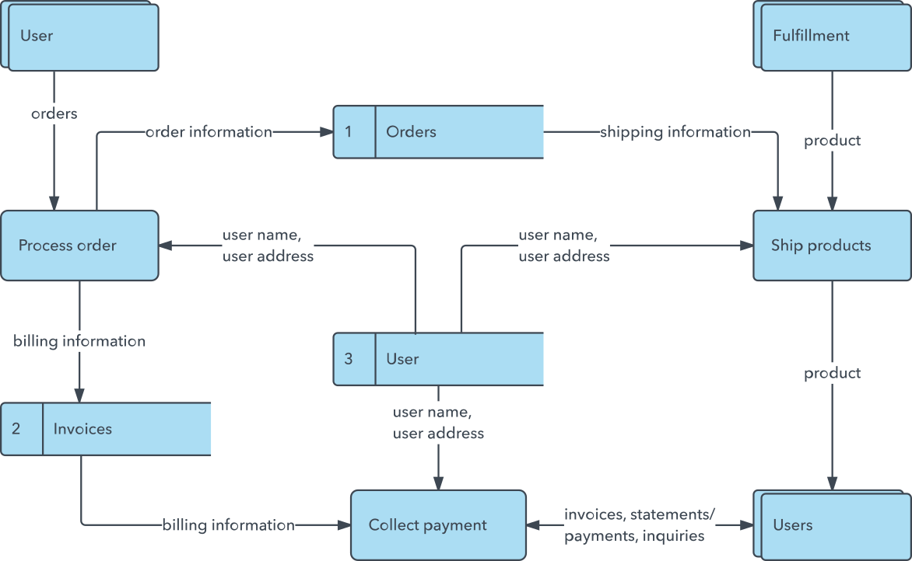
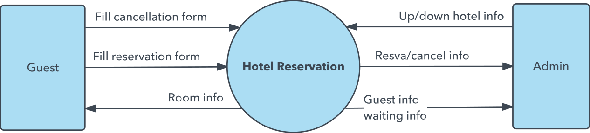
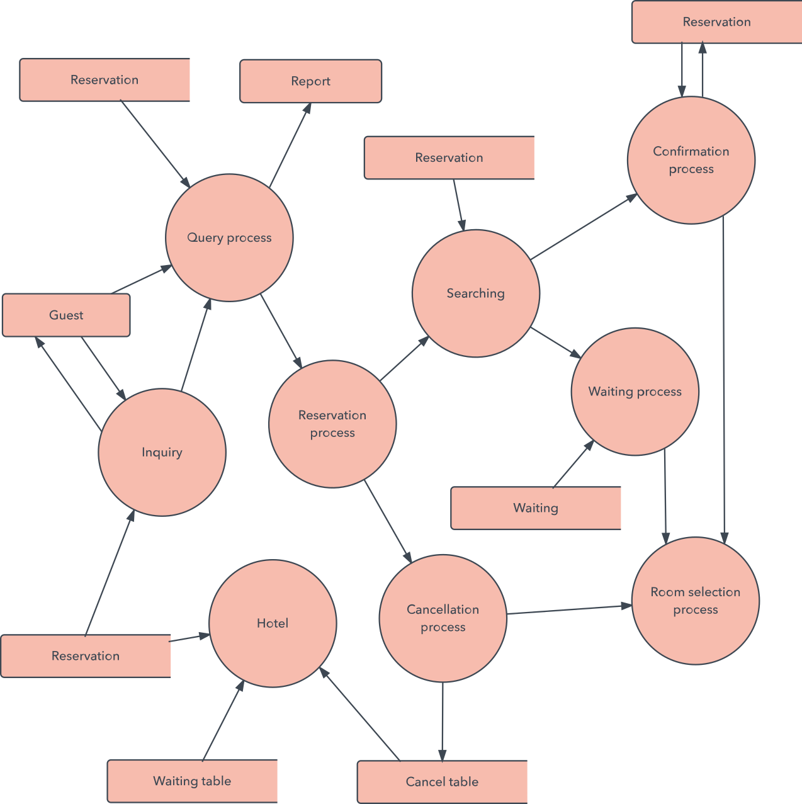

Um diagrama de fluxo de dados (DFD) mapeia o fluxo de informações para qualquer processo ou sistema. Ele utiliza símbolos definidos, como retângulos, círculos e flechas, além de rótulos de textos breves, para mostrar entradas e saídas de dados, pontos de armazenamento e as rotas entre cada destino. Fluxogramas de dados podem variar de resumos de processos simples, até mesmo desenhados à mão, a DFDs profundos e de múltiplos níveis, detalhando de forma progressiva o modo como os dados são manuseados. Eles podem ser usados para analisar um sistema existente ou modelar um novo.
Assim como os melhores diagramas e gráficos existentes, o DFD pode visualmente “dizer” coisas que seriam difíceis de explicar em palavras. O DFD funciona bem para o público técnico e não técnico, do desenvolvedor ao CEO. E é por isso que DFDs ainda são bastante utilizados depois de tantos anos. No entanto, embora ainda sejam funcionais para softwares e sistemas de fluxo de dados, hoje em dia são menos aplicáveis para visualizar software ou sistemas interativos em tempo real ou orientados a banco de dados.

O histórico do DFD
Diagramas de fluxo de dados entraram em grande uso no final da década de 1970, impulsionados pelo livro Structured Design(‘Projeto estruturado de sistemas’), de Ed Yourdon e Larry Constantine, pioneiros da computação. Os autores se basearam nos modelos de computação de “gráficos de fluxo de dados” de David Martin e Gerald Estrin. O conceito de projeto estruturado foi muito bem aceito no campo da engenharia de software, e o método DFD popularizou-se junto. Tornou-se cada vez mais utilizado na área de negócios na medida em que era aplicado mais em análises empresariais do que em campos acadêmicos.
Dois conceitos relacionados também contribuíram:
Análise e design orientados a objetos (OOAD, em inglês), apresentado por Yourdon e Peter Coad para analisar e projetar uma aplicação ou um sistema.
Método de análise e design de sistemas estruturados (SSADM, em inglês) – um método em cascata para analisar e projetar sistemas de informação. Esta abordagem rigorosa de documentação contrasta com abordagens mais ágeis e modernas, como Scrum e a Metodologia de desenvolvimento de sistemas dinâmicos (DSDM, em inglês).
Os especialistas Tom DeMarco, Chris Gane e Trish Sarson também contribuíram para a maior divulgação e uso da metodologia DFD. Trabalhando em diferentes combinações entre si, tornaram-se os principais definidores dos símbolos e notações usados em diagramas de fluxo de dados.
Símbolos de um diagrama de fluxo de dados
Dois sistemas de símbolos comuns receberam seus nomes em sua homenagem:
Yourdon e Coad
Yourdon e DeMarco
Gane e Sarson
Uma grande diferença entre seus símbolos é que Yourdon-Coad e Yourdon-DeMarco empregam círculos para representar processos, enquanto Gane e Sarson utilizam retângulos com cantos arredondados, por vezes chamados de losangos. Como há ainda outras variações de símbolos em uso, é importante ser claro e consistente nas formas e notações que você usa para se comunicar e colaborar com os outros.
Sejam quais forem as regras ou orientações de DFD utilizadas, os símbolos representam os quatro componentes de diagramas de fluxo de dados.
1. Entidade externa: um sistema externo que envia ou recebe dados, comunicando-se com o sistema sendo diagramado. É a fonte e o destino das informações que entram ou saem do sistema. Ela pode ser uma organização externa ou pessoa, um sistema de computador ou um sistema de negócios. Outros termos através dos quais também é conhecida são: terminadores; fontes e sumidouros; ou atores. É tipicamente desenhada nas bordas do diagrama.
2. Processo: qualquer processo que altere os dados, produzindo uma saída. Pode realizar cálculos, classificar dados com base na lógica ou direcionar o fluxo de dados com base em regras de negócios. Um rótulo curto é utilizado para descrever o processo, tal como “Enviar o pagamento”.
3. Armazenamento de dados: arquivos ou repositórios que armazenam informações para uso posterior, como uma tabela de banco de dados ou um formulário de adesão. Cada armazenamento de dados recebe um rótulo simples, como “Pedidos”.
4. Fluxo de dados: a rota dos dados entre entidades externas, processos e armazenamentos de dados. Ele retrata a interface entre os outros componentes, é representado por setas e geralmente é rotulado com um nome de dados curto, como “Detalhes de faturamento”.
Cada processo deve ter, pelo menos, uma entrada e uma saída.
Cada armazenamento de dados deve ter, pelo menos, um fluxo de dados de entrada e de um fluxo de dados de saída.
Dados armazenados em um sistema devem passar por um processo.
Todos os processos em um DFD vão para outro processo ou um armazenamento de dados.
Dados armazenados em um sistema devem passar por um processo.
Níveis e camadas de DFDs: de diagramas de contexto a pseudocódigos
Um diagrama de fluxo de dados pode conter muito mais detalhes ao usar níveis e camadas, focando uma determinada peça. Níveis de DFDs são numerados 0, 1 ou 2, e, ocasionalmente, atingem o nível 3 ou mais. O nível de detalhe necessário depende do escopo do que você está tentando realizar.
O DFD nível 0 é também chamado de diagrama de contexto. É uma visão geral básica de todo o sistema ou processo a ser analisado ou modelado. É projetado para ser uma visão de bater o olho, mostrando o sistema como um único processo de alto nível, com o seu relacionamento com entidades externas. Deve ser facilmente compreendido por um público abrangente, incluindo partes interessadas, analistas de negócios, analistas de dados e desenvolvedores.

O DFD nível 1 oferece maiores detalhes de peças do diagrama de contexto. Ele destaca as principais funções desempenhadas pelo sistema na medida em que você expande o processo de alto nível do diagrama de contexto em subprocessos.
O DFD nível 2 aprofunda ainda mais partes do nível 1. Pode ser preciso mais texto para chegar ao nível necessário de detalhes em relação ao funcionamento do sistema.

A progressão aos níveis 3, 4 e acima é possível, mas é incomum ir além do nível 3. Ela pode criar complexidades que dificultam a comunicação, compararão ou modelagem de forma eficaz
O uso de camadas de DFDs permite que os níveis em cascata sejam encaixados diretamente no diagrama, oferecendo uma aparência mais limpa, com fácil acesso a um detalhamento mais profundo.
Ao aprofundar seus conhecimentos de DFDs, desenvolvedores e designers podem usá-los para escrever pseudocódigo, que é uma combinação de inglês e linguagem de codificação. O pseudocódigo facilita o desenvolvimento do código real.
Exemplos de como DFDs podem ser utilizados
Diagramas de fluxo de dados são adequados para análise ou modelagem de vários tipos de sistemas em diferentes campos de atuação.
DFDs na engenharia de software: nos anos de 1970, os diagramas de fluxo de dados tiveram seu início. DFDs oferecem uma abordagem focada no desenvolvimento técnico, possibilitando uma maior pesquisa para então iniciar a codificação.
DFD na análise de negócios: analistas de negócios usam DFDs para analisar os sistemas existentes e encontrar ineficiências. A diagramação do processo pode revelar etapas que de outra forma poderiam passar despercebidas ou não ser totalmente compreendidas
DFDs na reengenharia de processos de negócios: DFDs podem ser usados para modelar um fluxo de dados melhor e mais eficiente em um processo de negócios. A reengenharia de processos de negócios (RPN) foi desenvolvida nos anos 1990 para ajudar as organizações a reduzirem seus custos operacionais, melhorarem seu serviço ao cliente e competirem de forma mais eficiente no mercado
DFDs e desenvolvimento rápido: DFDs podem ser usados para visualizar e entender requisitos técnicos e empresariais, além de planejar os próximos passos a serem tomados. Eles podem servir como ferramenta simples, porém poderosa, para a comunicação e colaboração, assim atingindo um rápido desenvolvimento.
DFDs em estruturas de sistemas: qualquer sistema ou processo pode ser analisado detalhadamente e de forma progressiva para melhorá-lo, seja em base técnica ou não técnic
DFD x Linguagem de modelagem unificada (UML)
Enquanto o DFD ilustra como os dados fluem em um sistema, a UML, uma linguagem de modelagem utilizada em design de software orientado a objetos, oferece uma visão mais detalhada. O DFD fornece um bom ponto de partida, porém, durante o desenvolvimento do sistema, desenvolvedores podem recorrer aos diagramas UML, incluindo diagramas de classes e de estrutura, para atingir a especificidade necessária.
DFD lógico x DFD físico
Estas são as duas categorias de um diagrama de fluxo de dados. O DFD lógico visualiza o fluxo de dados essencial para o funcionamento de uma empresa. É centrado no negócio e nas informações necessárias, e não em como o sistema funciona ou se propõe a funcionar. No entanto, um DFD físico mostra como o sistema é realmente implementado no momento, ou em como ele será implementado no futuro. Por exemplo, em um DFD lógico, os processos seriam atividades de negócios, enquanto em um DFD físico, os processos seriam programas e procedimentos manuais.
Você pode criar seu próprio DFD on-line com o Lucidchart. Use nossos exemplos de DFDs e notação especializada para representar visualmente o fluxo de dados em seu sistema. Nosso criador de diagramas de fluxo de dados é simples e eficaz. Comece com um template e, em seguida, use nossas formas para customizar seus processos, armazenagens de dados, fluxo de dados e entidades externas.